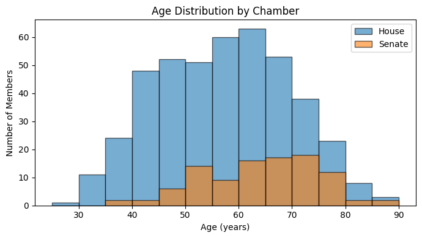
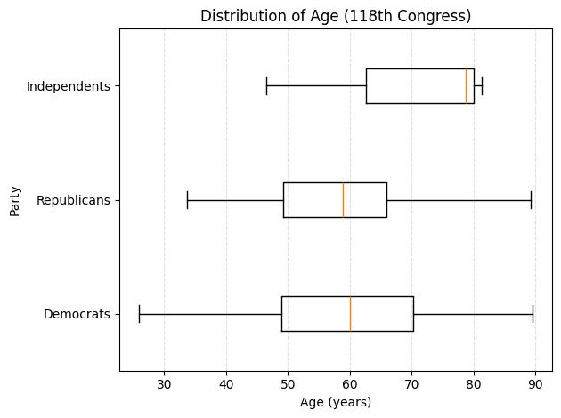

Purpose: To test whether specific features of a Congress member (age, tenure, party, and generation) predict whether they serve in the House or Senate using machine learning. Conduct further analysis on the dataset to produce audience-facing visuals that help clearly summarize what the numbers suggest and what they don’t.
My Work (full code here):
- Data Cleaning: Narrowed the dataset to work with the 118th Congress only; Coded categorical variables (e.g., House=0, Senate=1), mapped generation categories, and dropped unneeded fields
- Machine Learning: Built a Random Forest classifier using party_code, cumulative congress tenure (cmltv_cong), age_years, and generation as features
- Improving Performance: Tuned parameters to improve performance (accuracy improved up to ~0.81)
- Data Visualization: Reported feature importance and created visuals
Findings: Age and tenure drove most of the accuracy in predicting chamber membership for the 118th Congress. Visually, the age-by-chamber histogram supports this as the Senate’s age profile is shifted older than the House, with fewer members in younger bins and a higher concentration in the 60–70+ age range. The visual reinforces that chamber differences align more with career stage/tenure than party identity.

This conclusion is also consistent with the Senate’s higher minimum age requirement and its reputation as the upper chamber, where members often have longer political careers. Party affiliation contributed little, which makes sense given that party isn’t deterministically tied to chamber membership and the Senate is nearly evenly split between the two parties.
Furthermore, the age-by-party boxplot disproves the common misconception that Democratic legislators are younger than Republican lawmakers—a belief often shaped by party branding and a handful of highly visible younger members. The boxplot suggests that party labels don’t reliably predict who is younger in Congress. While Democrats include the youngest individual member (≈26), the overall Democratic age distribution does not skew younger than Republicans in a meaningful way. In fact, Democrats’ median age is slightly higher (≈59 vs. ≈57 for Republicans). The two distributions also overlap heavily, indicating that many Democratic and Republican lawmakers fall in the same age ranges.

Completed as part of Boston University DS110 (Introduction to Data Science with Python)